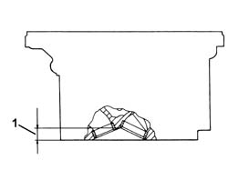
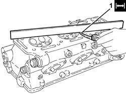
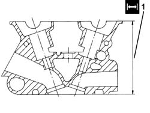
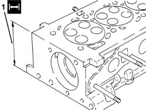

1016E38 SINGLE CYLINDER HEAD OR (ONE) L OR R, REMOVED - GRINDING
- Path
- Procedures > 10 ENGINE UNIT > 1016 CYLINDER HEAD/S > 1016E CYLINDER HEAD/S - VARIOUS OPERATIONS > 1016E38 SINGLE CYLINDER HEAD OR (ONE) L OR R, REMOVED - GRINDING
- Kind
- repair procedure (removal / refitting; the operation number is the code)
- Applies to
- engines: 2.0 JTS, 3.2 V6, 1.9 JTD 16V; all production periods
- Interactive page
- https://sloeber94.github.io/elrnDB-aGt/en/#/125000914
Applies to: engines: 2.0 JTS; all production periods
Clean any residues of sealant from the matching surfaces of the cylinder head and front journal cap.
Check that the planarity of the lower cylinder head surface is within the recommended values.
 | Measurement | Value | |
|---|---|---|---|
- | Cylinder head lower plane planarity (mm) | 0.1 |
1. If the planarity of the lower cylinder head surface is not within the recommended values, reface the lower cylinder head surface without exceeding the minimum permissible height for the combustion chamber.
| Measurement | Value | |
|---|---|---|---|
1 | Combustion chamber minimum permissible height (mm) | 12.8 ÷ 13.2 |
The volume of the combustion chamber for each cylinder is given below.
| Measurement | Value | |
|---|---|---|---|
- | Combustion chamber volume (c.c.) | 38.2 |

Applies to: engines: 3.2 V6; all production periods
Clean the residues of the old gasket from the lower surface of the cylinder head.
1. The table gives the lower cylinder head surface planarity value.
| Measurement | Value | |
|---|---|---|---|
1 | Cylinder head lower plane planarity (mm) | < 0.1 |

Applies to: engines: 3.2 V6; all production periods
1. Reface the lower cylinder head surface without exceeding the minimum permitted height.
| Measurement | Value | |
|---|---|---|---|
1 | Minimum permitted cylinder head height (mm) | 134.85 ÷ 135.15 |

Applies to: engines: 1.9 JTD 16V; all production periods
Check that the planarity of the lower cylinder head surface is within the recommended values.
| Measurement | Value | |
|---|---|---|---|
- | Flatness of bottom surface (mm) | 0.1 ± 0.05 |
1. If the planarity of the lower cylinder head surface is not within the recommended values, regrind the lower cylinder head surface without exceeding the minimum permissible height.
| Measurement | Value | |
|---|---|---|---|
- | Permissible minimum height (mm) | 107.0 ± 0.05 |
